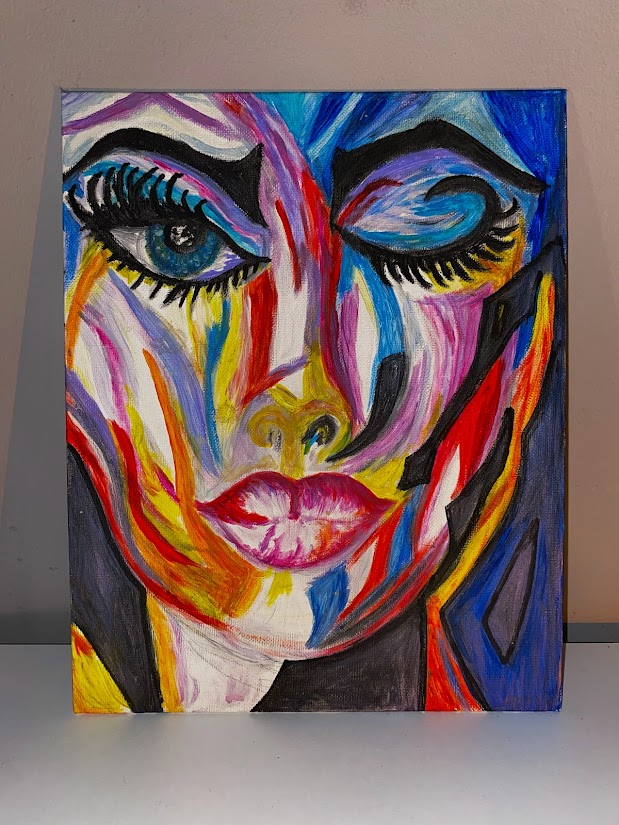
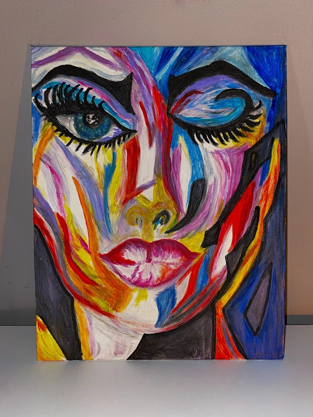

BEATA MALESA

O MNIE
Gdy byłam mała dziewczynką bardzo lubiłam rysować i dużo czasu spędzałam nad tworzeniem kolorowych malunków, co w rezultacie stało się moją wielką pasją. W szkole i w klasie byłam bardzo aktywna artystycznie i powierzano mi zadania związane z malowaniem i pisaniem. Moim wychowawczynią była artystka, malarka Pani Gabriela, która prowadziła lekcje plastyki. To właśnie ta kobieta odkryła we mnie talent plastyczny, który stał się moją pasją na całe życie. Marzyłam o tym żeby stworzyć swoje własne atelier i rozwijać swój talent, ale tak się nie stało. Poszłam w innym kierunku zawodowym, choć moja wychowawczyni namawiała i zachęcała mnie, żebym poszła dalej rozwijać swoje zdolności do Akademii Sztuk Pięknych. Teraz, z perspektywy czasu żałuję, że jej nie posłuchałam. Moja teraźniejsze i wcześniejsze prace nie miały nic wspólnego z rysowaniem, ale mimo wszystko w każdej wolnej chwili chwytam za ołówek, kredki, farby, akcesoria do malowania i próbuję wyzwalać w sobie to, co zostało mi zaszczepione w dzieciństwie i do dzisiaj we mnie drzemie, czyli miłość do malowania. Może kiedyś uda mi się stworzyć to swoje własne atelier i przeleję swoje nagromadzone emocje na płótno i sprawię, że wszystko we mnie ożyje na nowo.
.png)
GALERIA


 
